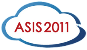
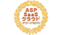
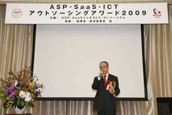
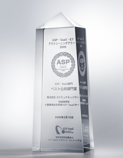
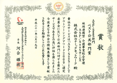
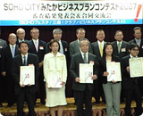

ニュース一覧
2023
- 2023.10.02
- 国際福祉機器展 H.C.R.2023に出展しました
- 2023.03.08
- カナミックネットワークが「健康経営優良法人 2023」に認定
- 2023.02.24
- カナミッククラウドサービスの介護業務支援システムは「ケアプランデータ連携」に対応いたします
- 2023.02.24
- カナミッククラウドサービスの介護業務支援システムは「インボイス（適格請求書）」の発行に対応いたします
- 2023.02.21
- 千葉県浦安市がカナミッククラウドサービスを活用した在宅医療・介護連携システムの運用を開始
- 2023.01.27
- 「全国老施協版介護ICT導入モデル事業」介護の生産性向上検討に「業務時間見える化ツール」が活用
- 2023.01.24
- カナミッククラウドサービスは訪問看護オンライン請求に対応します
2022
- 2022.10.27
- 「要支援要保護児童等リスクアセスメント AI 評価システム」
BabyTech(R) Awards 2022 保育 ICT 部門 優秀賞受賞 - 2022.10.17
- 健康優良企業「銀の認定」を更新いたしました
- 2022.05.10
- 株式会社アーバンフィットの完全子会社化について
- 2022.03.09
- カナミックネットワークが「健康経営優良法人2022」に認定
- 2022.03.08
- 介護業界向け「カナミックかんたん電子決済サービス」の提供を開始
2021
- 2021.12.23
- 株主優待抽選結果のお知らせ
- 2021.10.20
- NBC主催「未来を創る」動画コンテストに参加しております
- 2021.10.15
- 健康優良企業「銀の認定」を更新いたしました
- 2021.09.03
- 豊橋市地域課題解決プロジェクト「Urban Innovation TOYOHASHI（アーバンイノベーション豊橋）」へ参画
- 2021.03.09
- カナミックネットワークは健康都市活動支援機構と共同で自治体向け地域データヘルスシステムの標準化を目指したシステム開発を開始
- 2021.03.05
- カナミックネットワークが「健康経営優良法人2021」に認定
2020
- 2020.12.17
- 面倒な請求書・領収書発行業務をDXにより効率化！
「カナミックかんたんWeb明細」＋「カナミックかんたん郵送代行（BPO）」をサービス開始致しました！ - 2020.11.18
- カナミックネットワークと識学が上場や成長を目指す介護事業者向けに「識学：コンサルティングサービス」と「カナミッククラウドサービス」のICT支援で業務提携
- 2020.10.16
- 健康優良企業「銀の認定」を更新いたしました
- 2020.07.31
- 介護記録をQRで簡単に！「カナミックかんたん介護記録」アプリをリリース
- 2020.07.09
- 自治体向けに、カナミック独自AIを活用した「要支援要保護児童等リスクアセスメントAI評価システム」を販売開始
- 2020.06.24
- カナミックネットワークと弁護士ドットコムが医療・介護業界向けに電子契約「クラウドサイン」販売で業務提携
- 2020.04.13
- 約35万枚のマスク寄付企画に3,347件（総事業所数13,373事業所）からのご応募をいただきました
- 2020.04.07
- カナミックネットワークとBabyBusの約35万枚のマスク寄付企画の締切日を前倒し致します
- 2020.04.03
- カナミックネットワークとBabyBusが共同で、医療・看護・介護・保育等の事業者向けにマスク約35万枚を寄付いたします
- 2020.03.31
- 新型コロナウイルス感染対策に伴うテレワーク実施期間再延長のお知らせ
- 2020.03.31
- 看護・介護におけるテレワーク事例：「ナースケアグループ」が「カナミッククラウドサービス」を活用してテレワーク導入
- 2020.03.23
- 新型コロナウィルス感染症拡大の景気対策で開始となった経済産業省「IT 導入補助金 一次公募（臨時対応）」で「カナミッククラウドサービス」が対象ツールに認定
- 2020.03.09
- カナミックネットワークが「健康経営優良法人 2020」に認定
- 2020.02.21
- 弊社社長の山本のインタビュー記事がBEST TIMESに掲載されました
- 2020.02.21
- 当社は映画『ケアニン～こころに咲く花～』の特別協賛をしています
- 2020.02.14
- CareTEX2020に出展いたしました
- 2020.01.06
- 医療・看護・介護業界向け人材紹介サービスおよび給与前払いサービスの提供を開始
2019
- 2019.12.23
- 株主優待抽選結果のお知らせ
- 2019.10.28
- 「東京都多職種連携ポータルサイト設計・開発業務委託」に係る事業の受託について
- 2019.10.11
- クロスヘルス EXPO 2019に出展いたしました
- 2019.09.27
- 国際福祉機器展 H.C.R.2019に出展しました
- 2019.09.19
- 健康優良企業「銀の認定」を取得いたしました
- 2019.08.07
- CareTEX名古屋2019に出展しました
- 2019.07.04
- CareTEX福岡2019に出展しました
- 2019.06.11
- 広島および沖縄営業所を開設しました
- 2019.04.20
- バリアフリー2019に出展しました
- 2019.02.08
- CareTEX2019に出展しました
2018
- 2018.12.25
- 株主優待抽選結果のお知らせ
- 2018.10.12
- 国際福祉機器展 H.C.R.2018に出展しました
- 2018.07.18
- 東京証券取引所市場第一部への上場市場変更に関するお知らせ
- 2018.07.11
- 東京証券取引所市場第一部への上場市場変更承認に関するお知らせ
- 2018.06.20
- 総務省「平成30年度予算 IoT サービス創出支援事業」に参画
- 2018.05.31
- 香川県丸亀市が子育て支援でカナミックを導入 子育て世帯ニーズを行政に反映させるシステム構築へ
- 2018.05.07
- 「カナミッククラウドサービス」が経済産業省のIT導入補助金（平成29年度補正サービス等生産性向上IT導入支援事業）の対象に認定
- 2018.05.07
- 総務省「IoTサービス創出支援事業」に係る成果報告を実施
- 2018.04.18
- クラウド電子カルテとテレビ会議システムを連携させた多職種連携を開始
- 2018.04.05
- バリアフリー2018に出展しました
- 2018.04.02
- 多言語対応のタブレット型「介護記録システム」をリリース
- 2018.03.29
- カナミックネットワークが国立大学法人 旭川医科大学に共同研究講座設置
- 2018.01.19
- 施設業務全体の効率化をサポートし、ケア品質を向上する「施設向けシステム」リニューアル
2017
- 2017.12.26
- 「医療情報ASP・SaaSサービス」新制度の第一号認定取得
- 2017.12.05
- 首都圏最大級の在宅医療機関 悠翔会グループがカナミッククラウドサービス情報共有プラットフォームを導入
- 2017.12.05
- 株式会社カナミックネットワーク主催 個人投資家向けオンライン会社説明会のご案内
- 2017.11.29
- 「日経デジタルヘルス」にて弊社代表取締役社長 山本のコラム「介護にイノベーションを巻き起こせ」の連載が始まりました
- 2017.11.13
- 11月13日発売の「プレジデント誌」に弊社代表取締役社長 山本と、フリーアナウンサー 住吉美紀さんの対談が掲載されました
- 2017.10.02
-
医療・介護業界初 地域連携でTポイントが貯まる！
カナミックネットワーク ポイントサービスを開始 - 2017.09.29
- 国際福祉機器展 H.C.R.2017に出展しました
- 2017.09.25
- カナミックネットワーク、パナソニック、学研ココファンがサ高住でIoT連携による介護サービス向上のプロジェクトを開始
- 2017.09.21
- 株式会社キャリアとの業務提携契約締結のお知らせ
- 2017.09.08
- TV番組「情熱大陸」でカナミックネットワークの新キャッチコピー制作過程が取り上げられました。
- 2017.07.27
- 厚労省の介護人材確保についての委託事業でカナミックユーザーが先進的取り組みとして視察を受けました
- 2017.06.30
- 山梨県笛吹市がカナミックネットワークの子育て支援システム「ふえふき子育て広場」のアプリ配信を開始
- 2017.06.29
- 山本社長がラジオNIKKEIに出演しました
- 2017.06.05
- 広島・三原市の地域包括ケア連携シート「Zai-Takko三原」カナミッククラウドサービスで多職種・他法人の情報共有を開始
- 2017.05.23
- 新オレンジプラン 認知症初期集中支援に ICT 千葉県柏市の支援チームがカナミッククラウドサービス利用開始
- 2017.04.22
- 第23回バリアフリー2017に出展しました
- 2017.04.21
- 千葉営業所を5月1日に新設 地域に密着した営業体制構築を目指します
- 2017.04.17
- 地域包括ケアに取り組む自治体・医師会に向け医療・介護の情報共有システムの無料サービス提供開始
- 2017.03.30
- 沖縄・那覇市医師会がカナミッククラウドサービスを導入しました
- 2017.03.17
- 第3回 CareTEX2017に出展しました
- 2017.03.10
- 最新医療経営 Phase3 4月号にカナミックネットワークの情報共有システムを取り入れた「柏プロジェクト」の紹介記事が掲載されました
- 2017.03.02
- フロネシス16号に代表取締役社長 山本のインタビューが掲載されました
- 2017.02.28
- 総務省 IoT サービス創出支援事業に係る委託先候補に選定されました
- 2017.02.23
- バイエル薬品 代表取締役社長との懇談会に出席しました
- 2017.02.06
- 経済産業省サービス等生産性向上ＩＴ導入補助金の対象に認定されました
- 2017.01.11
- 高齢者住宅新聞に代表取締役社長 山本のインタビューが掲載されました
2016
- 2016.12.05
- バイエルライフイノベーションアワード2016大賞を受賞しました
- 2016.10.14
- 国際福祉機器展 HCR2016に出展しました
- 2016.09.14
- 東京証券取引所マザーズ市場への上場のご報告
- 2016.05
- メディカルコミュニケーションに掲載されました
- 2016.04.21
- 第22回バリアフリー2016に出展しました
- 2016.03.18
- 第2回CareTEX2016に出展しました
2015
- 2015.10.31
- 第17回西日本国際福祉機器展に出展しました
- 2015.10.09
- 国際福祉機器展HCR2015に出展しました
- 2015.08.30
- 日本ホスピス・在宅ケア研究会全国大会in横浜に参加しました
- 2015.07.17
- 国際モダンホスピタルショウ2015に出展しました
- 2015.05
- 月刊シニアビジネスマーケットに掲載されました
- 2015.04.18
- バリアフリー2015に出展しました
- 2015.04.05
-
未来医XPO’2015に出展しました
- 2015.01.31
- 東京都医師会 医療とITシンポジウムにて講演
- 2015.01.20
- 介護ビジョンに掲載されました
- 2015.01.07
- 高齢者住宅新聞に掲載されました
2014
- 2014.10.21
-
名古屋市 地域ケアモデルで中間報告
医療・介護連携にカナミックシステムを導入している名古屋市で医師・介護担当者などが話し合う会議が開かれ、その様子がNHKで紹介されました。
- 2014.10.16
-
ASPIC主催「ASP・SaaS・クラウドアワード2014」受賞のお知らせ
カナミッククラウドサービスをご利用いただいている「在宅療養支援 楓の風グループ」様がユーザー部門で総合グランプリを受賞されました。
- 2014.10.14
- カナミックネットワークのホームページをリニューアルいたしました
- 2014.10.01
- 国際福祉機器展 HCR2014に出展いたしました
- 2014.10.06
- 福岡営業所が移転いたしました
- 2014.07.16
- 国際モダンホスピタルショウ2014に出展いたしました
- 2014.06.09
- 会社案内ムービー
- 2014.06.06
- 「医療と介護を連携へ 名古屋市が仕組み作り」日テレNEWS24で紹介されました
- 2014.06.06
- 名古屋市での地域包括ケアの取り組みがNHKで紹介されました
- 2014.04.17
- バリアフリー2014に出展いたしました
- 2014.03.22
- 全国在宅療養支援診療所連絡会 第1回全国大会に出展いたしました
- 2014.03.13
- 共同開発契約締結のお知らせ
- 2014.03.01
- 第16回日本在宅医学会大会に出展いたしました
- 2014.02.28
- 改正消費税法の対応に関するお知らせ
2013
- 2013.11.22
- 第15回西日本福祉機器展に出展いたしました
- 2013.11.21
- 第33回医療情報学連合大会に出展いたしました
- 2013.10.23
- ホスペックスジャパン2013に出展いたしました
- 2013.09.30
- 「在宅ケア最前線～生きぬくちから～」が放送されました
- 2013.09.18
- 第40回 国際福祉機器展（HCR2013）に出展いたしました
- 2013.09.10
- ASPICクラウドフォーラムにて「超高齢社会を支える地域包括ケアとクラウド医療介護連携の役割と展望」について弊社会長が講演をいたしました
- 2013.09.10
- クラウド医療・健康・福祉フォーラムが開催され、「在宅医療・看護・介護の連携におけるクラウドサービスの活用事例」をテーマに弊社専務山本が講演いたしました
- 2013.07.29
- 北九州市の戸畑区で開催された「戸畑区地域ケア研究会」において、弊社山本専務が講演いたしました
- 2013.07.23
- docomo Business Onlineにて「在宅医ネットよこはま」の事例が紹介されています
- 2013.07.17
- 国際モダンホスピタルショウ2013に出展いたしました
- 2013.07.16
- 医療法人後藤外科胃腸科医院様の公式動画にて弊社システムが紹介されました
- 2013.07.06
- 第21回日本ホスピス・在宅ケア研究会に出展いたしました
- 2013.07.01
- 大阪営業所が移転いたしました
- 2013.06.28
- 地域医療福祉情報連携協議会主催のシンポジウムに出展いたしました
- 2013.05.25
- 国立がん研究センター東病院と共同開発した「在宅がん患者様支援システム」が２０１３年５月２５日の読売新聞に掲載されました
- 2013.04.20
- 第19回高齢者・障がい者の快適な生活を提案する総合福祉展「バリアフリー2013」に出展いたしました
- 2013.04.15
- 在宅医療や多職種連携に役立つ情報共有システムのご紹介
- 2013.04.12
- 有識者インタビュー（カナミックシステムユーザーの方々から）をアップいたしました
- 2013.02.20
-
カナミックネットワーク本社にてケアマネジャー様向けにインターライセミナーを開催いたしました。
特定非営利活動法人インターライ日本より公認講師をお招きし、「地域包括ケアのニーズに応える“根拠あるケアマネジメントセミナー”～ＭＤＳ方式からインターライ方式へ～」を開催いたしました。
2012
- 2012.09.28
- 第39回国際福祉機器展「HCR2012」に出展いたしました
- 2012.09.18
- カナミックネットワークは平成24年9月18日に本社を移転いたしました
- 2012.07.06
- 7月6日（金）日経ホールにて行われたクラウド・イノベーション・シンポジウム2012において弊社山本専務が講演いたしました
- 2012.06.20
-
ASPIC主催「ASP・SaaS・クラウドアワード2012」が開催されました
6月20日（水）に第６回ASP・SaaS・クラウドアワード2012が開催され、東京大学高齢社会総合研究機構の実証事業に弊社情報共有システムを活用した「地域包括ケア情報連携サービス」モデルがその功績を認められ、ユーザ部門にて委員会特別賞を受賞いたしました。
- 2012.06.15
-
在宅医療と多職種連携での活用事例が日本経済新聞に掲載されました
2012年6月15日（金）の日本経済新聞に、「横浜市在宅療養支援診療所連絡会」（通称：在宅医ネットよこはま）が弊社のクラウドサービスを活用して、医療・看護・介護の多職種連携を強化する取り組みが取り上げられました。
- 2012.05.26
-
「在宅医ネットよこはま」が医療・看護・介護の多職種連携において弊社クラウドシステムを試行導入
5月26日（土）「横浜市在宅療養支援診療所連絡会」（在宅医ネットよこはま）が、在宅療養の現場で多職種連携を支える『クラウドコンピューターシステム説明会』を開催いたしました。
- 2012.04.21
- 第18回高齢者・障がい者の快適な生活を提案する総合福祉展「バリアフリー2012」に出展いたしました
- 2012.03.20
- 雑誌「経済界」3月20日号に、弊社社長の「介護サービス向上を実現する独自の情報システムを提供」というインタビュー記事が掲載されました
- 2012.02.17
-
弊社会長の山本奨が千葉テレビ番組にて対談に出演いたしました
千葉テレビで放送されております「サタデー千葉プロジェクト」にて、
「超高齢社会をICT技術で乗り越える日本力」というテーマで対談に出演しました。
2011
- 2011.10.12
- ダイヤ財団主催「根拠に基づくケアマネジメントの実現」フォーラムが開催されました
- 2011.07.05
-
「クラウドASP･SaaSイノベーションシンポジウム(ASIS2011)」
ASP･SaaS･クラウド コンソーシアム(ASPIC)/日本経済新聞社主催「クラウドASP･SaaSイノベーションシンポジウム(ASIS2011)」にて弊社会長の山本奨が講演を行いました。
- 2011.06.24
-
カナミックネットワークの提供するシステムが『ASP･SaaS･クラウドアワード2011』を3年連続受賞致しました。
- 2011.03.03
- 「日経産業新聞」に弊社カナミックネットワークのシステムが先端技術面記事にて紹介されました
- 2011.03.02
-
弊社のクラウド型介護システム（ASP・SaaS）が特許を取得致しました。
『特許番号：特許第４６５８２２５号』
これにより、地域包括ケアの実現に大きく寄与できると確信しております。
これからもより一層のご愛顧を宜しくお願い申し上げます。
2010
- 2010.09.24
- 第37回 国際福祉機器展 H.C.R.2010に出展いたしました
- 2010.08.31
- プライバシーマークの更新認定を受けました
- 2010.08.01
- 大阪営業所および福岡営業所を開設致しました
- 2010.05.25
- ASPIC/日本経済新聞主催「クラウドASP・SaaSイノベーション・シンポジウム」（ASIS2010）にて弊社会長の山本奨が講演を行いました
- 2010.02.25
- カナミックネットワークの提供するシステムが『ＡＳＰ・ＳａａＳ・ＩＣＴアウトソーシングアワード２０１０』を二年連続受賞致しました
- 2010.02.02
- 日本を代表する成長企業を、C-PRO LINKというネットワークで形成する未来の大企業プロデュース番組【C-PRO】にてカナミックネットワークが紹介されました
- 域連携型クラウドで介護ビジネスを支援 アジアの見本、世界に誇れるシステムへ｢日経ビジネス｣誌2月1日号に当社専務、山本拓真のインタビュー記事が掲載されました
- 2010.01.29
- ｢ASP・SaaS安全・信頼性に係る情報開示認定制度｣の認定を受けました
- 2010.01.25
-
「未来に向けて何が必要か」技術ではなく、ビジョンから発想
「日経ビジネス」誌1月25日号の「トップインタビュー」に当社会長山本奨のインタビュー記事が掲載されました。
2009
- 2009.07.03
-
日経ホールにてASIS2009 ASP・SaaSイノベーション・シンポジウムが開催されました
トラック4 D-1セッションにて弊社の専務取締役 山本拓真が、「医療と介護のチームアプローチを実現するASP・SaaSの可能性」の講演を行ないました。
- 2010.02.19
-
ASP・SaaS部門「ベスト公共部門賞」受賞
ASPIC主催「ASP・SaaS・ICTアウトソーシングアワード2009」ASP・SaaS部門において、応募総数120社（152サービス）の中からカナミックネットワークの提供する「地域連携型 介護事業総合管理ASP/SaaSサービス」が、「ベスト公共部門賞」を受賞いたしました。

クリスタルトロフィー「ASP・SaaS・ICTアウトソーシングアワード」とは、ASP・SaaS・ICTアウトソーシング市場においてこれらのサービスやビジネスモデル、技術が社会の情報基盤として貢献するため、また各事業経営者、営業・企画・技術者の意欲向上を目的として2006年より開催されています。今回は3回目の開催となります。

賞状
2008
- 2008.10.27
- 最勝ビル8階に移転いたしました。今後とも変わらぬお引き立てのほど宜しくお願い申し上げます
2007
- 2007.11.16
-


SOHO CITYみたかビジネスプランコンテスト2007でカナミックネットワークの『地域連携を実現するための在宅介護支援ネットワークシステム』が最優秀賞を受賞いたしました。
2006
- 2006.05.11
- カナミックネットワークがプライバシーマークを取得いたしました
- 2006.04.26
- カナミックネットワークが保険医療福祉情報システム工業会（JAHIS）に入会いたしました
- 2006.04.25
- 株式会社コスモリバティ社発行の「ケアサポート情報 2006年春号」に弊社の地域包括支援センターシステムが紹介されました
- 2006.04.07